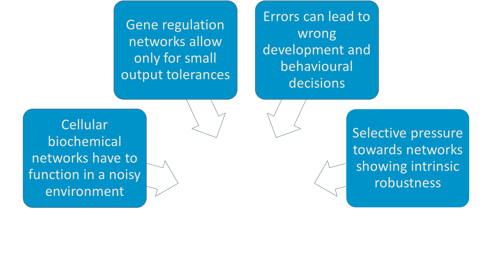
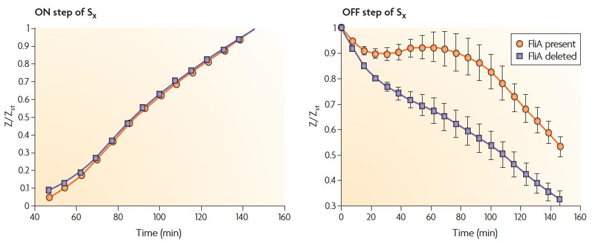

Network Motifs
Understanding Biology through Mathematics
presented by Laura Martens & Arthur Heimbrecht
Contents
Introduction
Mathematical Models
Large Networks
Conclusion & Outlook
Introduction
What are network motifs?
-
Basic interaction patterns that recur throughout biological and non-biological networks much more often than in random networks
-
Small set of network motifs serve as bulding blocks of large networks
-
Each network has a defined function: e.g. filters, pulse generators
Real network

Random network


Transcription networks
Activators and repressors


Evolution of network motifs




Mathematical models
Classifying developmental and sensory networks
- Sensory networks
- Cell "senses" its surroundings/its own state
- Response is a function of the signal
- Developmental networks
- Response does not depend on the signal if threshold is reached
- Cell fate decisions are final
Preliminary example
Preliminary example
Biological example

Biological example
Buzzer
Buzzer
Sniffer
Sniffer
Sniffer
Irreversible switch
Irreversible switch
Reversible switch
Reversible switch
Positive feedback oscillator
Positive feedback oscillator
Negative feedback oscillator
Negative feedback oscillator
Large network example
Large network example
Large Networks
Logic operators
There are different ways how X and Y can be integrated to regulate the Z promoter

Two common input functions are the AND gate and OR gate.
AND Gate

OR Gate
Detection of network motifs
Theoretically and Experimentally
Finding network motifs theoretically
Algorithm to detect network motifs:
- Create a network with same number of nodes as the real network
- Assign the same number of incoming and outgoing edges to each node
as has the corresponding node in the real network - Scan network for all possible n-node subgraphs and record the number
of occurrences of each subgraph - Compare probabilities → cut-off probability

Study network motifs experimentally
- Measure the transcriptional activity of promoters by means of reporter genes
- Widely used: Green Fluorescent Protein (GFP)
- Promoter activation is detected by increased fluorescent signal
- Fast-folding GFP variants become fluorescent within minutes after transcription initiation


Conclusion
Conclusion & Outlook
- Complex biological networks contain a limited set of network motifs
- Networks can be broken down into smaller understandable motifs
- Certain network motifs have been selected again and again in evolution
- Mathematical modeling has helped to define functions of network motifs
- How do network motifs work in large networks?
- Further research on other networks
Thank you for listening!
Literature
- Alon, Uri. "Network motifs: theory and experimental approaches." Nature Reviews Genetics 8.6 (2007): 450.
- Tyson, John J., Katherine C. Chen, and Bela Novak. "Sniffers, buzzers, toggles and blinkers: dynamics of regulatory and signaling pathways in the cell." Current opinion in cell biology 15.2 (2003): 221-231.
- Milo, Ron, et al. "Network motifs: simple building blocks of complex networks." Science 298.5594 (2002): 824-827.
- Phillips, Rob. "Napoleon is in equilibrium." Annu. Rev. Condens. Matter Phys. 6.1 (2015): 85-111.
- Kalir, Shiraz, Shmoolik Mangan, and Uri Alon. "A coherent feed‐forward loop with a SUM input function prolongs flagella expression in Escherichia coli." Molecular systems biology 1.1 (2005).
- Kollmann, Markus, et al. "Design principles of a bacterial signalling network." Nature 438.7067 (2005): 504.
- Zaslaver, Alon, et al. "A comprehensive library of fluorescent transcriptional reporters for Escherichia coli." Nature methods 3.8 (2006): 623.
- Uri Alon. "Network Motifs." URL: https://www.weizmann.ac.il/mcb/UriAlon/research/network-motifs (19.06.2018)
Pictures
Phillips, Rob. "Napoleon is in equilibrium." Annu. Rev. Condens. Matter Phys. 6.1 (2015): 85-111.
Alon, Uri. "Network motifs: theory and experimental approaches." Nature Reviews Genetics 8.6 (2007): 450